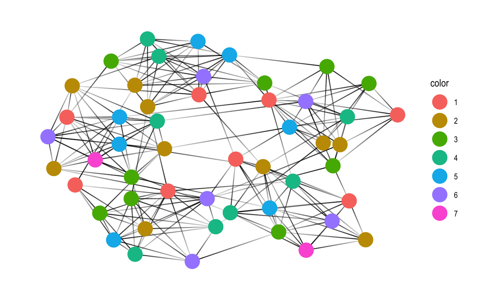

graphcoloring is a collection of graph coloring algorithms for coloring vertices of a graph such that no two adjacent vertices share the same color. The algorithms are included via the embedded ‘GraphColoring’ C++ library, https://github.com/brrcrites/GraphColoring.
Installation
You can install the released version of graphcoloring from CRAN with:
Development version can be installed with
Example
color_* functions operate under tidygraph family and can be used to color nodes within mutate context similar to group_* functions in tidygraph.
library(graphcoloring)
library(tidygraph)
library(ggraph)
set.seed(42)
play_islands(5, 10, 0.8, 3) %>%
mutate(color = as.factor(color_dsatur())) %>%
ggraph(., layout = 'kk') +
geom_edge_link(aes(alpha = ..index..), show.legend = FALSE) +
geom_node_point(aes(color = color), size = 7) +
theme_graph()
graph_coloring_* functions directly take adjacency lists and returns an integer vector of assigned labels. For example, this can be used with sf::st_intersects() to color a feature collection for visualization.
library(graphcoloring)
library(USAboundaries)
library(sf)
library(ggplot2)
set.seed(48)
us_states() %>%
filter(!(name %in% c("Alaska", "District of Columbia", "Hawaii", "Puerto Rico"))) %>%
mutate(
color = st_intersects(.) %>%
graph_coloring_dsatur() %>%
as.factor()
) %>%
ggplot() +
geom_sf(aes(fill = color)) +
theme_bw()